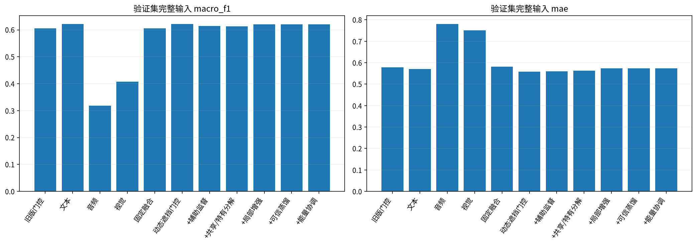
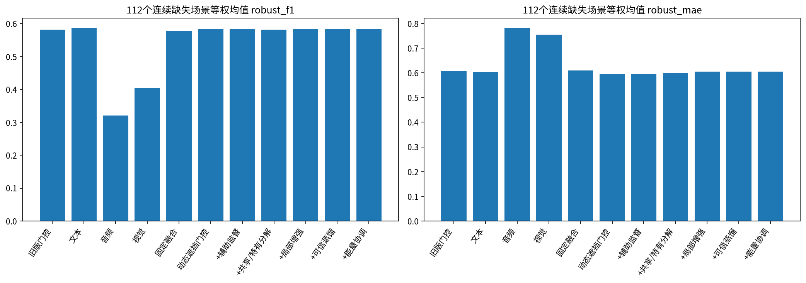
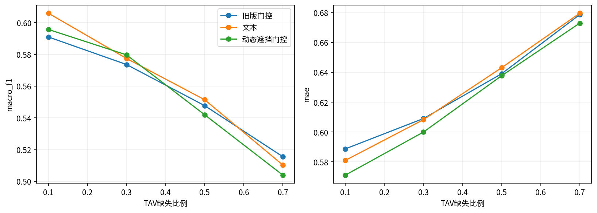
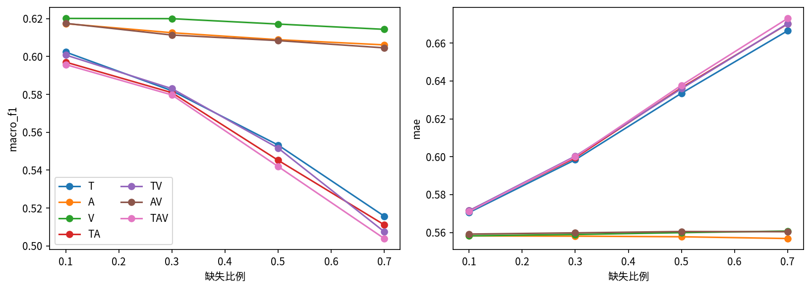
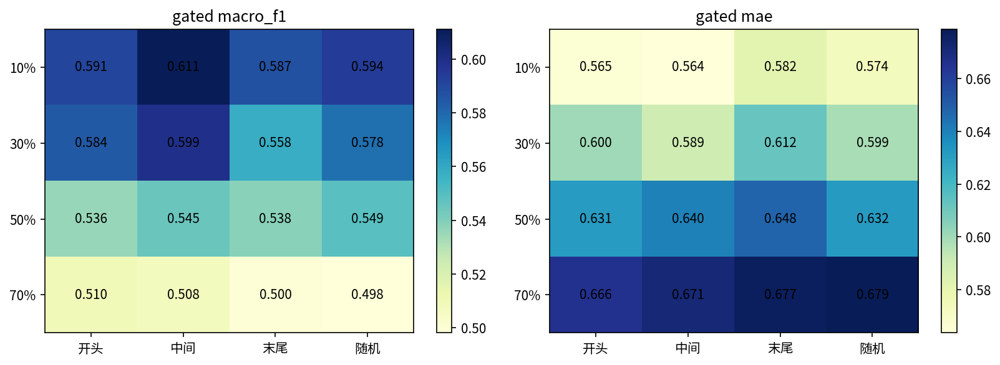
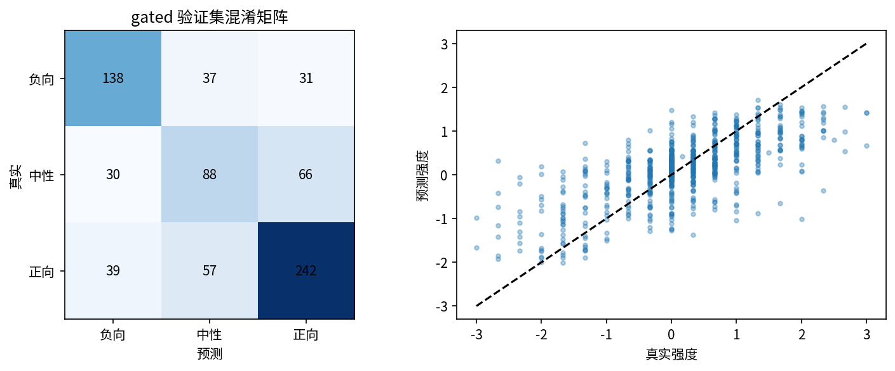
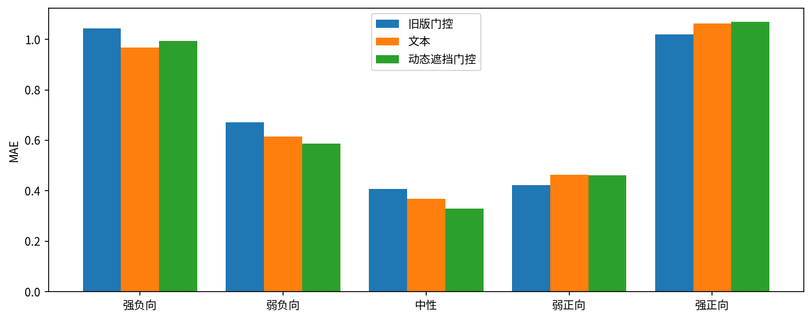
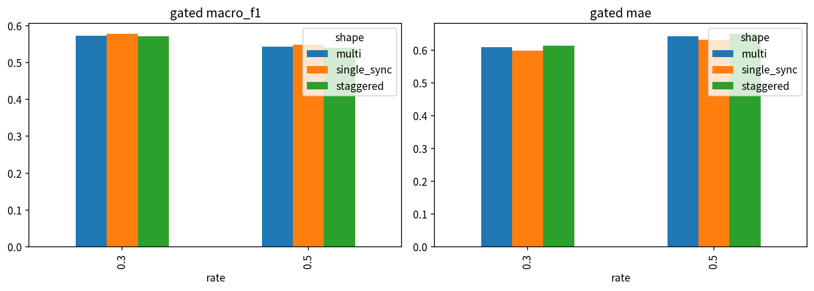
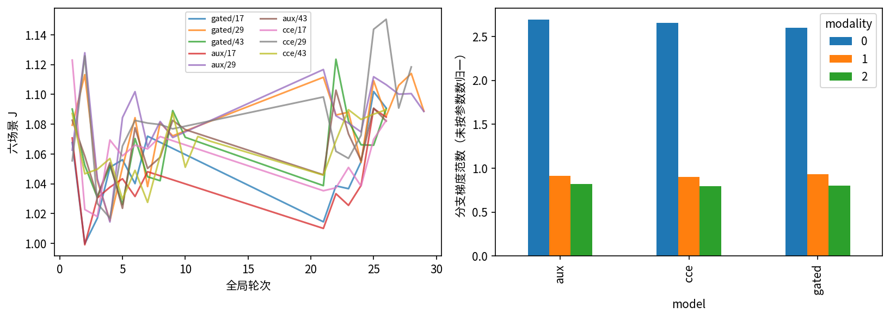

最终采用：old_gated；研究候选：gated。冻结文本编码器，三种子对照，验证集选择。
下载30条专项预测 · 验收对照 · 视频分组置信区间| model | J | clean_f1 | clean_mae | robust_f1 | robust_mae | neutral_recall | eligible |
|---|---|---|---|---|---|---|---|
| old_gated | 0.9926 | 0.6055 | 0.5784 | 0.5811 | 0.6067 | 0.4076 | False |
| text | 0.9796 | 0.6215 | 0.5702 | 0.5871 | 0.6032 | 0.5000 | False |
| audio | 1.4629 | 0.3189 | 0.7800 | 0.3207 | 0.7822 | 0.0272 | False |
| vision | 1.3450 | 0.4076 | 0.7508 | 0.4051 | 0.7544 | 0.1467 | False |
| fixed | 0.9946 | 0.6054 | 0.5813 | 0.5776 | 0.6102 | 0.4891 | False |
| gated | 0.9697 | 0.6214 | 0.5579 | 0.5825 | 0.5934 | 0.4783 | False |
| aux | 0.9762 | 0.6147 | 0.5603 | 0.5841 | 0.5958 | 0.4674 | False |
| msd | 0.9777 | 0.6133 | 0.5631 | 0.5815 | 0.5988 | 0.5109 | False |
| cce | 0.9814 | 0.6211 | 0.5741 | 0.5840 | 0.6050 | 0.5109 | False |
| imtd | 0.9814 | 0.6211 | 0.5741 | 0.5840 | 0.6050 | 0.5109 | False |
| emc | 0.9814 | 0.6211 | 0.5741 | 0.5840 | 0.6050 | 0.5109 | False |









| sample_id | raw_text | true_class | true_intensity | old_gated_class | old_gated_intensity | old_gated_abs_error | text_class | text_intensity | text_abs_error | gated_class | gated_intensity | gated_abs_error |
|---|---|---|---|---|---|---|---|---|---|---|---|---|
| f_ZJ7L14oYQ$_$21 | They just so much more convenient than stupid boots that take forever to put on and just aren't comfortable! | 2 | 2.000 | 0 | -0.887 | 2.887 | 0 | -0.571 | 2.571 | 0 | -1.012 | 3.012 |
| 266791$_$23 | As you're watching the movie it looks like they're actually looking at cue cards and reading these words for the first time, that's how the delivery is | 0 | -2.667 | 2 | 0.338 | 3.004 | 2 | 0.332 | 2.999 | 2 | 0.326 | 2.993 |
| 130456$_$3 | (uhh) It's, out of five stars, I would give it a five | 2 | 2.333 | 0 | -0.741 | 3.074 | 0 | -0.590 | 2.923 | 0 | -0.365 | 2.698 |
| 102858$_$4 | This one disc contains not only Garfield, not only Garfield's Halloween, Halloween (stutter) Adventure, a special I've I've (stutter) watched almost every year since I was about four, but it also has Garfield's (stutter) Thanksgiving, which is a pretty funny little short, funny little special, and A Garfield's Christmas, which is just absolutely awesome | 2 | 3.000 | 2 | 0.928 | 2.072 | 2 | 0.568 | 2.432 | 2 | 0.668 | 2.332 |
| 130456$_$11 | It it (stutter) involves like, (uhh) theoretical physics and just so much stuff and Donnie Darko no matter how weird he is is still really funny | 2 | 1.667 | 0 | -0.305 | 1.972 | 0 | -0.628 | 2.295 | 0 | -0.646 | 2.313 |
| TWszOxkOV0w$_$1 | And I think I reflect the outrage of the ordinary citizen who feels very strongly about the notion that we were told that CEOs require those kinds of pay packages because they are tied to performance. | 0 | -2.333 | 0 | -0.094 | 2.239 | 0 | -0.200 | 2.134 | 0 | -0.056 | 2.277 |
| 273539$_$3 | (umm) xxx seen this with a few of my friends and I was much more soft having done so (umm) this film has little substance | 0 | -2.667 | 0 | -0.444 | 2.223 | 0 | -1.105 | 1.561 | 0 | -0.413 | 2.253 |
| 252998$_$7 | (uhh) I think the best line in the movie comes from Tori Spelling when she looks at Parker Posey and says no you're not insane you're just incredibly spoiled | 2 | 1.333 | 0 | -1.053 | 2.387 | 0 | -0.838 | 2.171 | 0 | -0.878 | 2.211 |
| 33170$_$3 | It's a lot of toilet humor and cheap laughs, and if you are really really really desperate for that kind of a comedy, I highly recommend this movie for you | 0 | -2.000 | 0 | -0.595 | 1.405 | 0 | -0.329 | 1.671 | 2 | 0.188 | 2.188 |
| 247318$_$3 | B here standing for bad | 0 | -2.333 | 0 | -0.342 | 1.991 | 1 | -0.275 | 2.058 | 1 | -0.200 | 2.134 |
| 102858$_$6 | It's probably three of the best (stutter) holiday specials made in the last (uhh) let's see | 2 | 2.667 | 2 | 0.359 | 2.308 | 2 | 0.181 | 2.486 | 2 | 0.542 | 2.125 |
| gR4gM_WXesQ$_$20 | And while there have been Asian men who have been action heroes, like Bruce Lee and Jackie Chan, they’re more viewed as weapons or comic relief, not necessarily as romantic love interests. | 0 | -1.333 | 2 | 0.816 | 2.149 | 2 | 0.380 | 1.714 | 2 | 0.723 | 2.056 |
完整报告：问题二优化实验报告。候选未达标时保留旧模型；图中候选实验不代表最终替换。门控权重不是问题三的因果归因证据。